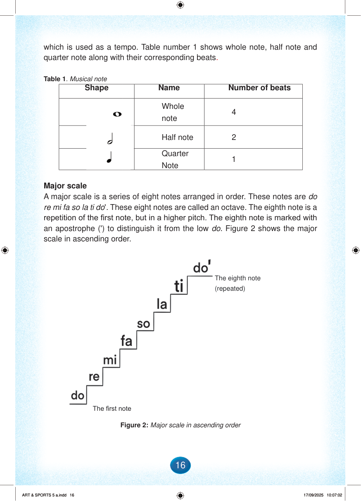

which is used as a tempo.
Table 1 shows whole note, half note and quarter note along with their corresponding beats.
Table 1. Musical note
Shape
Name
Number of beats
Whole note symbol
Whole note
4
Half note symbol
Half note
2
Quarter note symbol
Quarter Note
1
Major scale
A major scale is a series of eight notes arranged in order.
These notes are do re mi fa so la ti do'.
These eight notes are called an octave.
The eighth note is a repetition of the first note, but in a higher pitch.
The eighth note is marked with an apostrophe (') to distinguish it from the low do.
Figure 2 shows the major scale in ascending order.
Page background
The first note
The eighth note (repeated)
Figure 2: Major scale in ascending order